Scienceground 1.6666…
festivaletteratura
ECOSISTEMI
Un progetto di EXTEMPORANEA a FESTIVALETTERATURA
Mantova 7-13 Settembre 2020

«Gli esseri umani eccellono nella costruzione di nicchie ecologiche. Ci piace cambiare l’ambiente in modo che possa essere su misura per noi. Perciò togliamo dall’ambiente intorno a noi — la “natura” — quelle cose che possono avvelenarci, morderci o mangiarci.» «Neologismi come “olobionte” sono ormai entrati in letteratura, mostrando come ogni individuo biologico sia in realtà un ecosistema. La biologia dei sistemi dal canto suo avvalora sempre più la necessità di indagare la complessità di relazioni che connota i viventi.» «I batteri che abbiamo ricevuto da nostra madre entrano nel nostro corpo per formare il tessuto linfoide associato all’intestino, che ci permette di assorbire il cibo e di non reagirci contro. Ma come diffondere la voce che siamo una specie basata sulla cooperazione e che l’embriologia si occupa più di relazioni che di entità?» «La cultura — cioè il campo della socialità e dell’interpretazione dei significati — può essere terreno comune con altri esseri in un ecosistema. Le differenze tra specie, che siano uomini, pècari, tigri o il vaiolo, emergono non per via di essenze metafisiche, ma come racconto dei corpi fisici tramite i quali affrontano il mondo.»
Lynn Chiu, incontro alla lavagna a Festivaletteratura 2019; Telmo Pievani, prefazione a Eco-Devo. Ambiente e Biologia dello Sviluppo di Gilbert e Epel; Scott Gilbert, intervista per eXtemporanea; César Giraldo Herrera, Sweet Dreams Rocking Viking Boats: Biocultural Animic Perspectivism Through Nordic Seamanship.
L’anno scorso a Scienceground 1.5 abbiamo parlato di microbi, scoprendo che non sono creature aliene e autonome, ma che convivono con noi, condizionando e subendo le nostre pratiche e concezioni del mondo. Negli ultimi mesi uno di “loro” ha bussato prepotentemente alla nostra porta, e ci sta impegnando in una difficile trattativa su cosa è urgente e cosa è rimandabile, cosa è credibile e cosa è dubbio. Giusto e sbagliato.
Il microbo non è un prodotto della fantasia — almeno non solo di quella — ma ne serve tantissima — e non solo quella! — per capire come conviverci. Immaginandoceli, ci spingiamo a pensare alle loro molteplici interazioni con altri attori: umani, animali, vegetali, fluidi, gas, etc. Ecco allora che quest’anno Scienceground, giunto periodicamente all’edizione 1.6666…, è interamente dedicato agli ecosistemi.
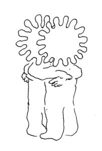
Lo studio della relazione tra Homo Sapiens e “ambiente” ha spesso seguito curve in un piano cartesiano generato da assi ortogonali tra loro. Su quello delle ascisse l’essere umano modifica gli habitat per trarne risorse in base alle proprie necessità; su quello delle ordinate esso stesso è soggetto alle condizioni materiali in cui vive. Entrambe queste prospettive ci aiutano a porre dubbi sistematici: fin dove è sostenibile il nostro sfruttamento delle risorse? Quando si innescherà una transizione? Verso quali nuovi equilibri dinamici?
Ora però ci sembra necessario esplorare una terza dimensione, e non più chiederci se ci sarà una natura dopo l’essere umano, e neppure se ci sarà posto per l’essere umano nella nuova natura. Serve un terzo asse, quello dell’immaginazione, contrassegnato dalla domanda: come dobbiamo attrezzarci per coesistere ancora?
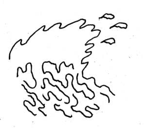
Proprio l’acqua che circonda Mantova è la migliore palestra per esercitare l’immaginazione, istruita dalle migliori pratiche scientifiche. Fiumi e laghi sono ricchi di organismi viventi immersi (letteralmente) in una moltitudine di habitat e nicchie ecologiche differenti e mutevoli. Si tratta di ecosistemi complessi in continua evoluzione, in grado di adattarsi ai cambiamenti e basati su una capacità di autodepurazione. Ecco allora che le rive del fiume Mincio, dei suoi laghi e delle sue derivazioni, diventano il luogo perfetto per studiare il nostro ecosistema e per riallacciare migliori legami con il “rivale” dell’altra sponda. Non costruendo improbabili ponti, ma immergendoci nelle acque dello stesso fiume.
Partiremo in questa esplorazione armati dei migliori strumenti nella tradizione di Scienceground, e qualche strumento nuovo: a fianco dei laboratori e delle libere letture, sperimenteremo delle passegiate lungo la via fluminis, un programma radio, qualche evento in streaming, e le tante possibilità che la città e il web ci offrono per mantenere una vicinanza d’intenti, anche in tempi di distanziamento fisico.
A margine di questo programma “ufficiale”, tante saranno le attività lasciate all’improvvisazione: per tenersi aggiornati i migliori strumenti sono il passaparola, il sito https://scienceground.it/, il canale Telegram https://t.me/extemporanea, e la nostra newsletter. Per ulteriori informazioni potete avventurarvi a scrivere a scienceground@festivaletteratura.it.
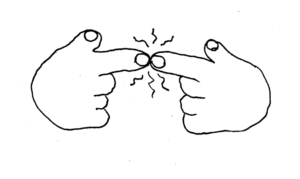
LIBERE LETTURE
I percorsi di avvicinamento a Scienceground 1.6666… prevedono — ça va sans dire — la lettura: romanzi, monografie, articoli scientifici e di divulgazione a tema ecosistemi. Non propriamente dei “gruppi di lettura” — con scadenze fisse e obbligo di aver finito il libro. Piuttosto degli “spazitempi” aperti di lettura e discussione collettive di libri o di loro estratti. Ne abbiamo organizzati tre, si svolgeranno online sul blog https://scienceground.it/, sul canale youtube di Scienceground e nei gruppi Telegram dedicati.
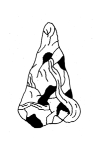
1. L’invenzione della natura: la vita e il Cosmo di Alexander von Humboldt
Nell’epoca in cui le scienze si armavano di malta e mattone per innalzare insormontabili barriere atte a separare le varie discipline, e la parola “scienziato” veniva coniata, le ultime due generazioni di filosofi della natura hanno attraversato l’Ottocento mentre — storpiando un celeberrimo detto di Gramsci — il vecchio mondo stava morendo, e quello nuovo si affrettava a comparire.
Humboldt, Lyell, Wallace, Cuvier, Lamarck, Somerville, Liebig, Darwin — e la lista potrebbe allungarsi. La loro intelligenza collettiva generò la concezione moderna del mondo naturale e del nostro posto in esso. Non solo: la loro attività di ricerca produsse anche l’intuizione di trovarsi al centro di “una rivoluzione sulla faccia della terra”. Era iniziata l’età industriale, la modernità, l’epoca geologica che da Homo Sapiens prende il nome stesso: l’antropocene.
Letture consigliate: L’invenzione della natura. Le avventure di Alexander Von Humboldt, l’eroe perduto della scienza di Andrea Wulf.
[Partecipa alla discussione sul gruppo telegram e sul blog]
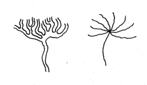
2. Il paese delle maree: viaggio nel regno di Bon Bibi
I Sundarbans sono una foresta di mangrovie nell’area del delta del Gange. Gli imperatori Mughal chiamavano questa zona bhatir desh, “il paese delle maree”, perché molte delle isole che la compongono emergono solamente con la bassa marea. È il territorio di Bon Bibi, divinità protettrice della foresta, che ne riserva una parte agli uomini e una parte al demone Dokkhin Rai perché possa vivere indisturbato. Secondo la leggenda, l’equilibrio viene rotto dall’avidità degli uomini, che si addentrano nella parte proibita della foresta.
Il paese delle maree è una terra di confine, non solo tra India e Bangladesh, ma anche, e soprattutto, tra fiume e oceano, tra terra e acqua, tra uomo e animale. I crescenti cambiamenti climatici antropogenici ne stanno mettendo a dura prova l’equilibrio. L’innalzamento del livello delle acque — anche di qualche centrimetro — potrebbe compromettere la sopravvivenza umana e animale in queste zone.
Letture consigliate: Il paese delle maree di Amitav Ghosh.
_[Partecipa alla discussione sul gruppo telegram e sul blog]_
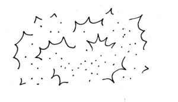
3. Fantascienza e futuri (non) scritti
E se una polvere tossica cadesse sulla terra devastandone l’ecosistema e costringendo le persone a vivere rinchiuse in casa, come cambierebbe la società? E se una civiltà extraterrestre comunista finisse le risorse del “Pianeta Rosso”, come si comporterebbe? E se scoprissimo che un pianeta può avere un’intelligenza collettiva, come cambierebbe la concezione della nostra?
Nel nostro terzo percorso di libere letture lo sguardo sarà rivolto al futuro: come potrebbe cambiare il nostro modo di relazionarci con gli ecosistemi a seguito dei vari scenari più o meno apocalittici che si profilano? Quale immaginario per l’uomo dopo la natura, o per la natura dopo l’uomo? Dall’Unione Sovietica agli Stati Uniti, dall’Africa alla Cina, i futuri possbili che sono stati immaginati sono innumerevoli, anche se tendiamo a dimenticarcelo. Vogliamo provare a riscoprirne qualcuno insieme, grazie ai what if da cui prendono il la molti libri di fantascienza.
Letture consigliate: Terminus Radioso di Antoine Volodine; Trilogia dell’Area X e Borne di Jeff VanderMeer; Stella Rossa di Aleksandr Bogdanov; Solaris di Stanisław Lem; Ma gli androidi sognano pecore elettriche? di Philip K. Dick; Galapagos di Kurt Vonnegut; novelle afrofuturistiche raccolte da Nalo Hopkinson (So long been dreaming) e Shawl Nisi (New suns); novelle cinesi, come L’estate di Tongtong, di Xia Jia; Camille stories di Donna Haraway; Respiro di Ted Chiang.
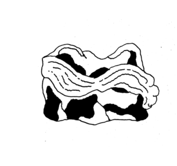
Via Fluminis
«Quando che fussero condotte a fine quelle opre ch’aveano esaudito il disìo del popolo tutto d’aver Mantua circondata dall’aque, rappresentando inanzi a li occhi l’imago di vasti laghi, allor tosto la Cittade divenne tanto magnifica e grande per pregi da stare nel numero delle grandi città di tutto l’Orbe. Poscia, al fin che per lo avenire i genti non obliassero le cose et li lochi che in somma son perfettione d’equilibrio tra aqua, terra et huomo, li Rettori munificentissimi estabilirono il cammino della Antica Via Flumins. Onne huomo, cittadino o forestiero, dee percorrere, capere e lustrare con cognoscenza, sua o altrui, sì che perpetua ne sia fatta la memoria alli descendenti nostri ne li secoli che verranno.»
Via Fluminis è una passeggiata: ci si immergerà nell’ecosistema complesso del fiume Mincio là dove incontra la sua città prediletta. Le rive del Lago di Mezzo ci mostreranno il complesso intreccio in cui uomo, città e ambiente cercano di convivere da secoli. Il percoso sarà costellato da testimonianze storiche e interventi itineranti – e per chi sarà munito di smartphone e cuffiette, da ascolti di file audio online – che apriranno ad un paesaggio inedito: un racconto della città attraverso il rapporto tra la sua storia, l’acqua, l’industria e l’ambiente, osservando come il confine tra artificiale e naturale sia mutevole e in cerca di continui riequilibri.
QUANDOVECOMECHI: Giovedì 10 settembre ore 9:30 e Domenica 13 settembre ore 10:00; ritrovo all’inizio del Ponte dei Mulini, lato Mantova-Lago Superiore; dai 15 anni in su; max 10 partecipanti; durata 2,5 ore – circa 7 km; tragitto pianeggiante prevalentemente su percorso pedonale o ciclabile, brevi attraversamenti su strada, un sottopassaggio con scale.
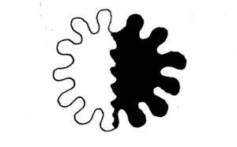
Dove uomo e acqua si incontrano (e cercano di convivere)
Con Marco Bartoli, Monica Pinardi, Mariano Bresciani, Stefano Fenoglio, Fabio Falchi, Anna Scardovelli
Fotografie satellitari ad altissima definizione, zanzare e specie aliene, qualche elemento di idraulica, di storia e di letteratura, le testimonianze dalla Via Fluminis. Tutti ingredienti che vanno comporre un racconto dei luoghi in cui essere umano e ambiente si influenzano a vicenda da tempi immemori.
eXtemporanea accompagna il pubblico in un incontro e confronto con gli scienziati e i ricercatori che da sempre sono impegnati nello studio dell’ecosistema del Mincio per capire quando questa convivenza è iniziata, come si sta evolvendo, e fin dove possiamo spingerci.
In collaborazione con CNR IREA e Università di Parma.
QUANDOVECOMECHI: Sabato 12 settembre ore 21:00; luogo da definire; dai 15 anni in su; durata 2 ore.
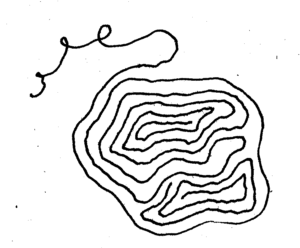
LABORATORI
Tre lezioni di sopravvivenza in acqua dolce
Anche quest’anno Scienceground propone i suoi laboratori come momento di incontro/confronto tra la comunità scientifica e il pubblico. Quest’anno ci doteremo dello sguardo dello scienziato per ispezionare le acque del Mincio. I partecipanti saranno coinvolti in una vera e propria attività di ricerca al fianco di docenti universitari e ricercatori, per vivere in prima persona le dinamiche, le tecniche e le difficoltà che caratterizzano il percorso scientifico.
In collaborazione con: Università degli Studi di Parma; Institute for Frontier Materials, Deakin University (Victoria, Australia); The ARC Research Hub for Future Fibres; LabterCrea Rete di Scuole Mantova & GLOBE Italia; Istituto Superiore E. Fermi di Mantova.
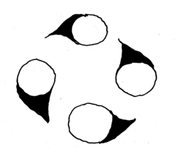
1 – Galleggiare
Con Marco Bartoli e Sara Benelli
Per sopravvivere negli ambienti acquatici hanno sviluppato uno stelo cavo che permette loro di galleggiare resistendo alle correnti, di avvicinarsi alla luce del sole, e di raggiungere il fondale per ancorarsi, trasportando i gas dalla superficie in profondità. Sono le macrofite acquatiche, che grazie alla loro estrema sensibilità costituiscono un formidabile indicatore della qualità dell’ecosistema.
2 – Aggrapparsi
Con Marco Bartoli, Gemma Burgazzi
Sotto un sasso o sullo stelo di una pianta acquatica si può celare il mondo affascinante dei macroinvertebrati: animali acquatici visibili ad occhio nudo che, per non essere trascinati via dalla corrente, vivono attaccati ai substrati disponibili sul fondo di fiumi e laghi. Crostacei, molluschi o anellidi, e futuri insetti che ci possono fornire preziose informazioni sulla composizione e sullo stato di salute dell’ecosistema in cui vivono.
3 – Nuotare
Con Alessandra Sutti, Stuart Robottom, Sandro Sutti
Non le vediamo, perché hanno dimensioni inferiori a 5 mm. Eppure sono zattere su cui navigano microbi e alghe per raggiungere zone inesplorate, terminando il loro percorso negli apparati digerenti di tanti animali, compreso l’uomo. Da qualche anno sono oggetto delle preoccupazioni e degli studi di ambientalisti, scienziati, politici. Sono le microplastiche, che anche nel Mincio vanno a confondere le distanze tra naturale e artificiale, tra micro e macro.
Stare a riva – laboratorio permanente
Presso il Gazebo di Scienceground scienziati e studenti condurranno attività di ricerca e divulgazione sugli ecosistemi del fiume Mincio. Dai campionamenti al filtraggio e riconoscimento delle microplastiche, dall’osservazione e catalogazione dei macroinvertebrati alla creazione di un erbario scientifico e — perché no? — artistico di piante di acqua dolce; chiunque potrà venire a trovarci, scambiare quattro chiacchiere, assistere alle attività come semplice osservatore oppure rimboccarsi le maniche e calarsi nei panni di un ricercatore intento a indagare l’ecosistema Mincio.
QUANDOVECOMECHI: Giovedì 10, Venerdì 11 e Sabato 12 settembre dalle ore 10:00 alle ore 17:30; Gazebo Scienceground, Lungolago Gonzaga, punto preciso da definire; adatto a tutte le età.
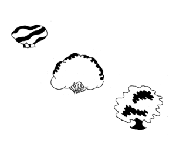
Mappe
Da quando Alexander von Humboldt disegnò la sua prima Naturgemälde (in francese Tableau Physique) nel 1807, le mappe sono diventate strumento fondamentale di esplorazione non solo geografica, ma anche ecosistemica.
In pieno stile Scienceground, quest’anno vogliamo rimettere lo spirito Humboldtiano al passo coi tempi, e costruire una Naturgemälde 2.0 del nostro ecosistema preferito: Mantova e il fiume Mincio!
Lo faremo sfruttando il sistema GIS (Geographic Information System), uno strumento universale che permette di organizzare e analizzare dati geografici, interfacciandosi alle banche dati tramite software open source. Talvolta però l’esplorazione dei numerosi database istituzionali, di enti privati, o di iniziativa pubblica, rivela dati non aggiornati, oscurati, incompleti, parziali, privi di fonte o di senso. Ecco un tema ricorrente a Scienceground: quanti e quali dati fanno un’informazione?
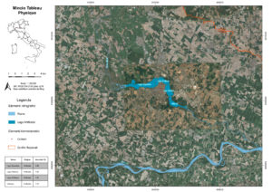
La mappa che vedete sopra è quello che la maggior parte di noi sa di Mantova e del suo fiume. Da qui partiamo per creare la nostra Minciogemälde con le osservazioni che riusciremo a raccogliere di giorno in giorno durante i laboratori, ma non solo.
Tutte le informazioni confluiranno nella nostra mappa interattiva e aggiornata in tempo reale, che vi invitiamo a consultare ogni giorno per scoprire, poco alla volta, come si compone un Tableau Physique e come si naviga in un sistema GIS:
Venite a trovarci al gazebo di Scienceground per partecipare in prima persona alla realizzazione, e…
Non fate fare tutto a noi!
Oggi bastano uno smartphone o un PC per inserire dati geolocalizzati su una mappa. È facilissimo arricchire una mappa in maniera diffusa e collettiva, ed è proprio quello che vi proponiamo di fare! Ecco tre spunti:
- Mandateci le tracce gps delle vostre esplorazioni di Mantova, magari partendo dall’Antica Via Fluminis e arricchedola di deviazioni interessanti. Lo strumento più semplice che potete usare per registrare una traccia GPS e condividerla è l’app Locus Map. Potete condividere la traccia inviandola a scienceground@festivaletteratura.it o sul gruppo Telegram dedicato — potete trovare un breve tutorial sull’uso dell’app qui. In alternativa, venite a trovarci al Gazebo di Scienceground.
- Autateci a mappare flora e fauna dei laghi di Mantova partecipando al nostro BioBlitz “Scienceground” su iNaturalist. Si tratta di un’altra app molto interessante: un progetto di citizen science dove chiunque può documentare la biodiversità del pianeta. Basta caricare una fotografia e un algoritmo di intelligenza artificiale proverà a riconoscere la specie nell’immagine, ma ad aiutarlo ci saranno nel nostro caso i ricercatori dell’università di Parma, tra i più esperti conoscitori dell’Ecosistema Mincio.
- In un racconto di John Cheever, il protagonista decide — per sfuggire alla noia di un pomeriggio di mezza estate — di tornare a casa via acqua: dal giardino di amici dove si trova gli basterà attraversare una quindicina di piscine private e una pubblica. Vogliamo raccogliere lo spunto letterario per proporvi un gioco di immaginazione:
- prendete una qualsiasi mappa e individuate il punto A: quello in cui vivete
- indivituate il punto B: la città di Mantova
- ora immaginate di avere una barca in grado di navigare anche il più piccolo ruscello e, partendo da A, individuate un percorso che vi porti a B via fiume. In alcuni casi vi potrà servire una capatina in mare… va bene lo stesso, l’importante è usare corsi d’acqua naturali
- inviateci la vostra rotta! Potete descrivercela oppure disegnarla direttamente su Google Earth e inviarcela come file KML (è molto semplice: basta usare l’opzione “traccia linea o forma”, salvare il percorso e poi scaricarlo con l’opzione “esporta come file KML”).
- prendete una qualsiasi mappa e individuate il punto A: quello in cui vivete
Pensare gli Ecosistemi
con Roberto Danovaro
Il concetto di “ecosistema” si applica contemporaneamente a un granulo di kefir e all’intero pianeta Terra, passando per il corpo umano: l’immunologia moderna infatti si concentra sempre di più sulle complesse interazioni tra il nostro corpo e i microrganismi che lo abitano, sfumando i confini tra umano e non-umano e mettendo in discussione il concetto di individuo [1]. Allo stesso tempo è sempre più chiaro che i microorganismi e le loro interazioni con l’ambiente giocano un ruolo cruciale nella risposta del pianeta al cambiamento climatico [2]. È forse tempo di adottare un punto di vista più ecosistemico su noi stessi e sul mondo? Ne parliamo con Roberto Danovaro, biologo marino e presidente della stazione zoologica Anton Dohrn di Napoli.
[1] Thomas Pradeu (2012), The Limits of the Self: Immunology and Biological Identity. New York: Oxford University Press.
[2] Roberto Danovaro et al. “Scientists’ warning to humanity: microorganisms and climate change.” Nature Reviews Microbiology 17.9 (2019): 569-586.
QUANDOVECOMECHI: giovedì 10 settembre, dalle 18.30, evento in streaming
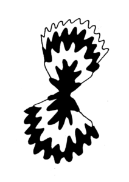
RADIO
UnoPuntoSeiPeriodico
Un ipotetico diluvio universale, ed eccoci naufraghi nelle acque torbide della chiacchiera (pseudo)scientifica. Ci aggrappiamo al tronco tematico degli ecosistemi per navigare in un mare invaso dai detriti culturali dell’epoca appena trascorsa: brandelli di romanzi, scene di film, tentativi di indagine sul campo, spezzoni di interviste. Con noi sulla zattera improvvisata una ciurma di esperti di navigazione scientifica e fantascientifica, e una radio a galena — che abbiamo avuto la prontezza di prendere in prestito al vecchio museo della tecnologia ai primi scrosci. Tentando di ripristinare un contatto con il mondo, ci avventueremo nell’esplorazione della relazione tra scienza e immaginario, metodo e discorso, gesto e parola. Nella speranza di approdare ad un’isola (ecolinguistica).
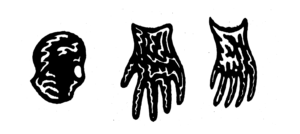
1 – Corpo e macchina
Con Simona Micali e Algoritmo Umano
Il susseguirsi dei paradigmi tecno-scientifici dà forma al corpo umano. Prima combustore di calorie, poi processore di informazione genica, oggi c’è da un lato chi sostiene che l’intelligenza artificiale superi quella umana, e chi dall’altro pensa che il corpo sia in simbiosi con il resto dell’universo.
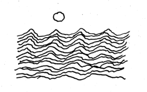
2 – Acque e isole
Con Daniele Comberiati e Nicola Grandi
“Se fossi acqua” come mi raffigurerei le trasformazioni che il mio corpo subisce mentre, dopo essermi sciolta ben sopra il limite delle nevi perenni, discendo i monti, attraverso le pianure, e infine mi diffondo verso il mare in un dedalo di canali? Tra Mincio e Gange, viaggio fluviale in acque incerte.
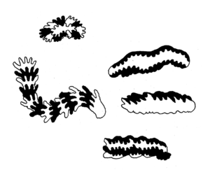
3 – Crescita e estinzione
Con Chiara Cigarini e Nicola Feninno
Ogni ecosistema si espande, muta, e può estinguersi. Affronteremo questo tema accompagnandoci alla fantascienza prodotta in uno dei paesi oggi in maggiore espansione, la Cina. Tratteremo il tema dello sfruttamento delle risorse che sostiene la crescita a tutti i costi, ripercorrendo la storia di quella particolare branca scientifica che per prima ha dedicato attenzione ai limiti delle risorse. Nell’isola ecolinguistica parleremo di come anche le lingue possono sparire — e con loro interi mondi di significato.
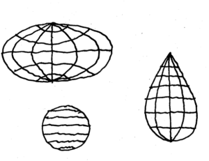
Puntata 4 – Mappe e terre
Con Simone Brioni e Federico Faloppa
L’esplorazione e lo sfruttamento di nuove terre da parte di donne e uomini “occidentali” li hanno portati a mappare il mondo secondo le loro osservazioni e preconcetti. Il continente africano è quello che più ne reca i segni: le linee che dividono gli stati sono tracciate arbitrariamente e non tengono conto degli ecosistemi umani, animali, vegetali. D’altra parte, la diaspora causata dallo schiavismo ha privato le persone delle loro radici. Così nasce l’Afrofuturismo, un immaginario fantascientifico che reinventa il mito delle origini e diventa occasione di riscatto.
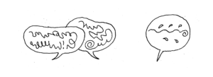
Riunione conclusiva: si parte!
Nel deserto non ci si può avventurare da soli. Allora, grazie al passaparola, ci si raduna in un luogo simbolico, poco fuori dal tumulto del mercato, e facendo tesoro delle esperienze di chi la via l’ha già battuta si forma una carovana. Strada facendo alcuni si uniscono, altri se ne vanno. Se tutti si disperdono, la via non c’è più. La strada è la carovana.
Ci piace pensare che eXtemporanea sia una specie di carovana. Faremo tappa a Mantova il prossimo Settembre, per poi proseguire. Là ci incontreremo di persona per abbeverare i dromedari e mappare la via di fronte a noi. L’appuntamento è aperto a tutti: quella che partirà non sarà la stessa carovana che è arrivata.
Qual è il deserto che ci chiama? Quale la destinazione? Non lo sappiamo, ma là dobbiamo andare.
QUANDOVECOMECHI: Da definire.
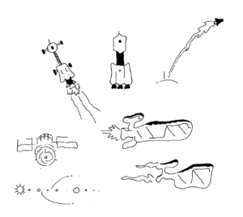
Disegni di Andrea De Franco.